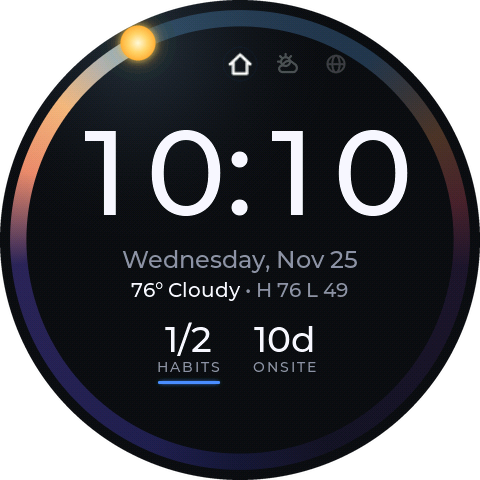

A clock with a living sky, a focus timer, timers, habits, countdowns, world clocks, weather and break reminders, all on one knob and a round touch screen. No accounts, no cloud, no phone app.
Firmware version. Plug the board in with a USB-C data cable first. The first time, hold BOOT on the board while you plug it in.

Install, find your way around with the knob and touch, and set up Wi-Fi.
Read the guideHear every sound, pick what plays for each event, or make your own and send it to the device over USB.
Open the sound labThe whole interface runs in your browser, so you can play with it before you build one.
Try itSource, parts list, the printable stand, and notes for changing the firmware (with or without an AI coding agent).
On GitHub